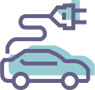
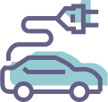

Respect the nature, respect the castle
We are optimists and we think the future can be bright. Therefore, we need to take sustainability seriously, knowing that any gathering of a large number of people has a potential negative impact on air, soil, water, resources and people. We need to draw up less resources, and we decided to start with our own little festival and go full on for a green policy. We trust we can influence change by leaving a positive legacy and hopefully inspiring our visitors to live more sustainably. It’s with these ideas that we try to build our festival as green as possible, improving ourselves year after year and knowing that we still have a long way ahead of us
Mandatory behaviors
✓ respect the nature on site.
✓ respect the ground.
✓ respect the trees, some are very old.
✓ respect the water area (the small lake, the waterways …).
✓ respect the ground.
✓ respect the trees, some are very old.
✓ respect the water area (the small lake, the waterways …).
What you cannot do / use or bring
✓ do not pee on the land, use the provided toilets.
do not litter on the land, use the provided bins.
✓ do not throw cigarettes butts on the floor as we recycle them, use provided ashtrays.
✓ no plastic bottles for sale (you must use the reusable cups).
✓ no flyering or stickering of any sort.
do not litter on the land, use the provided bins.
✓ do not throw cigarettes butts on the floor as we recycle them, use provided ashtrays.
✓ no plastic bottles for sale (you must use the reusable cups).
✓ no flyering or stickering of any sort.
To make sure we minimize our impacts, we have set a 10 steps process.


 


Green energy
Green energy lowers the impact of lighting & music. We encourage everyone involved in the festival to be aware of how much energy they use, while measuring, monitoring and reporting each year on energy usage. The last 2 editions were powered up only by renewable energy & using low consumption lightning on site.

Future food
Future food consists of 100 % locally sourced & organically grown food and ingredients from fair-trade source. Because of meat’s high climate & environmental impact, we propose a large range of vegetarian & meat free meals from our food providers. Menus are discussed internally in order to offer large & balanced alternatives. We also try to adapt food quantity to avoid leftovers.

Waste Management
Waste Management allows us, with our visitors’ participation, to sort, recycle and compost our waste. In order to minimize our waste stream, we have a “Zero single-used plastic” policy & we provide reusable cups for all drinks. We are also trying to implement a circular economy in regards with the waste generated by the festival.

Transport
Transport modes have the biggest impact on our carbon footprint. So how will you get here? We are providing near entrance parking for sustainable transport modes with our bicycle point. We promote Carpooling and Public transports: the more people share a car or public transport, the lower the carbon footprint per passenger, the lower the carbon footprint per festival resident.

Filtered tap water
Filtered tap water is available to avoid a wave of plastic water bottles which usually submerges festivals. Meet our less lucrative but more responsible alternative: Paradise City still & sparkling Tap Water.

Sustainable communication
Sustainable communication is considered whenever applicable: we use only FSC paper for all our communication on paper (flyers, posters …), which we try to cut down. And no tokens, it’s a cashless festival. As for our internet site, we make sure it is the lightest possible to avoid any negative environmental impact.

Water
Water is a valuable good of nature that is spread on festival ground as our visitors must rehydrate, eat and (optionally) shower. For a second year in a row, we intent to purify on site the water used in our showers, reducing treatment as much as possible. And with the use of our eco-toilets, we intent to reduce any excessive water usage.

CO2-Neutral
A CO2-Neutral festival is a goal we have achieved year after year. We are aware that even after all our efforts, there is a remaining climate impact. Taking our responsibility, we offset the unavoidable climate impact through the support of CO2logic’s climate project.

Camping
Camping has always been an ecological issue for festivals, meanly regarding all the waste left over. We have been working on the problem since our first edition and will implement for the second time in a row our circular camping where each camper has the opportunity to rent recycled camping gear, how cool is that?

Awareness
Awareness of the importance of a sustainable way of life is enhanced and communicated to our suppliers, partners and sponsors, to assure they share our concerns about a greener future. And we give you useful sustainable tips on the site of the festival.